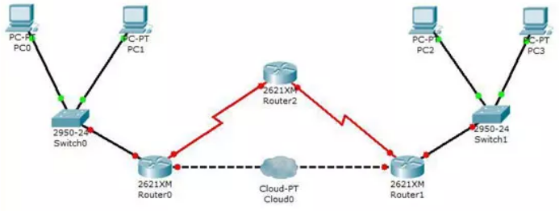
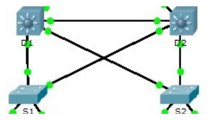

Identifica los siguientes elementos de ambas redes:
Servidor:
Central Server
Branch Server
Clientes:
HomeDesktop
HomeLaptop
Tablet
Inyeccion de tinta
PC1 a PC4
Laser
Smartphone
Invitado
Ventas y Telefono0 IP
Contabilidad y Telefono1 IP
Routers
WRS
R2
R4
Internet
Internet
Intranet

Servidor:
Clientes:
PC0 a PC3
Routers
Router0 a Router2
Internet
Cloud0
Identifica la topologia de las siguientes redes o subredes:
Estrella
Estrella
Estrella

Malla
En el diagrama de red A, ¿puede el ordenador HomeLaptop, de la red
HomeOffice acceder a la intranet de la empresa, o por el contrario
sólo sería accesible desde las redes Central o Branch?
Si que puede, siempre y cuando al intentar acceder a la intranet
mediante la red Central o Branch, el router de una de estas este
configurado para ser capaz de direccionar la conexion hacia la
Intranet, y que esta permita su acceso.
Por ejemplo, si en la Intranet existe una web a la que queremos
acceder de forma remota, podriamos conectarnos mediante un tunel
SOCKS con SSH al servidor de la intranet que se encuentre en una de
las redes Branch o Central, una vez conectado se configuraria el
navegador para usar ese tunel como proxy para asi hacer forwarding
del HTTP y poder acceder a la web. (Que yo recuerde en firefox
habia que habilitar una opcion para que tambien hiciera forwarding
del DNS, ya que sino ocurre un DNS leakeage).

 Estrella
Estrella
 Estrella
Estrella
 Estrella
Estrella